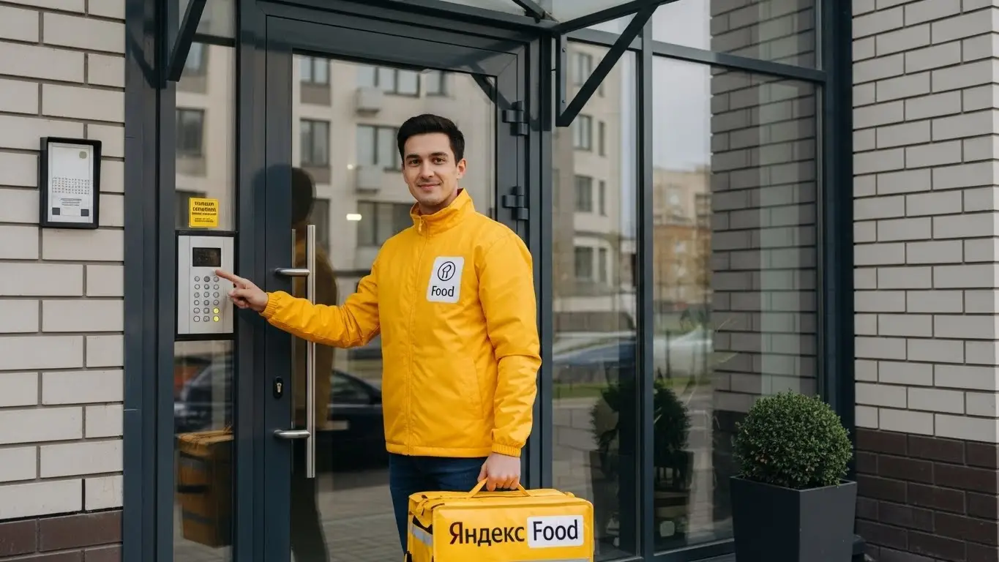
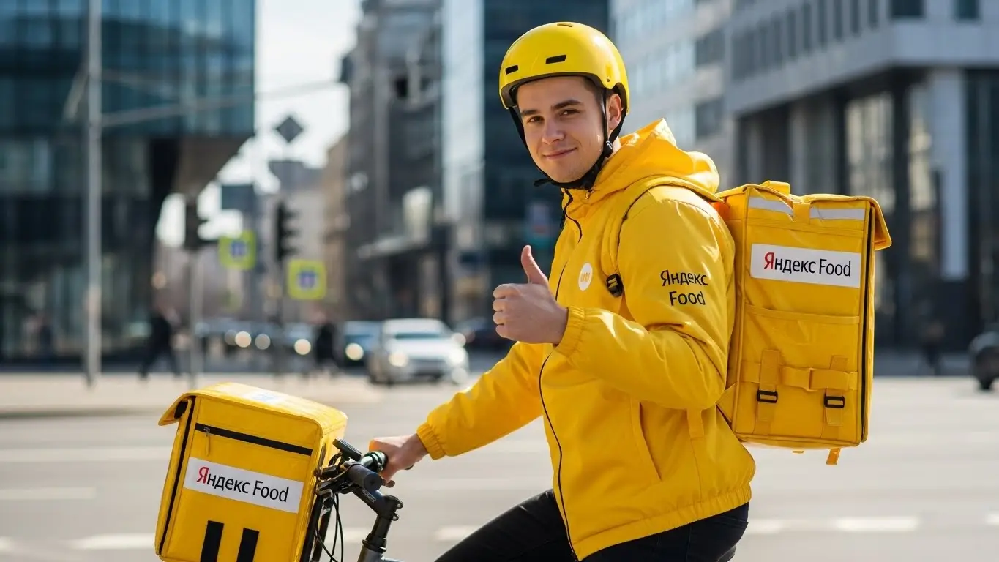
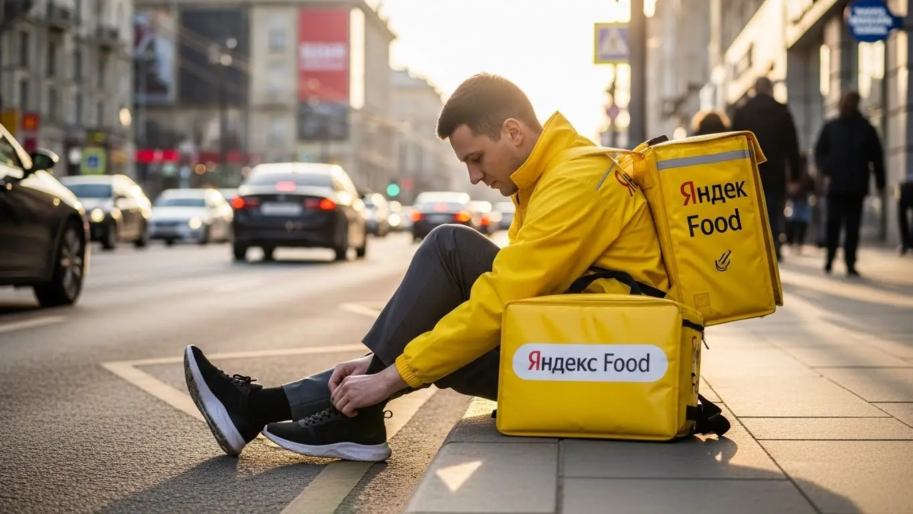
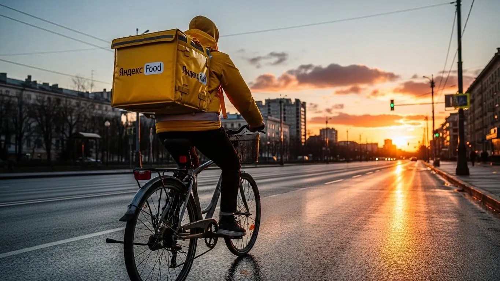

Работа курьером Яндекс Еда в Астрахани: доход 2025-2026
- Работа курьером Яндекс Еды в Астрахани: для кого эта вакансия и что вы получите
- Сколько вы будете зарабатывать курьером в Астрахани: калькулятор дохода и разбор выплат
- Реальный заработок курьера в Астрахани: смены и месячный доход
- График работы и форматы занятости
- Требования к кандидату и документы
- Самозанятость, налоги и юридическая чистота
- Пошаговое оформление и первый выход на линию в Астрахани
- Пешком, на вело или на авто: что выгоднее в Астрахани
- Районы, маршруты и «топовые» зоны заказов в Астрахане
- Безопасность, страховка, штрафы и оплата простоя
- Плюсы и возможные минусы работы курьером в Астрахани
- Реальные истории и отзывы курьеров из Астрахани
- Ответы на главные вопросы о работе курьером Яндекс Еды в Астрахани
- Короткие ответы на главные вопросы
- Итоги и ваш следующий шаг
Все города
Думаешь, работа курьером Яндекс Еда в Астрахани — это легкие деньги? Сел на велик или в машину, включил приложение и поехал? Как бы не так. Сразу в голове рой вопросов: а не убью ли я подвеску на наших дорогах, сколько реально останется в кармане после вычета бензина и налогов, и что делать, когда весь город стоит в пробке на Новом мосту в час пик? Я здесь, чтобы рассказать не рекламную сказку, а суровую астраханскую правду.
Поверь, разница между тем, кто зарабатывает 3000-4000 рублей за смену, и тем, кто едва отбивает бензин, — в деталях. В понимании, где в Астрахани высокий спрос, а где — глухие дворы и пятые этажи без лифта. Большинство новичков слепо катаются по центру, теряя время на парковке, или едут в спальники вроде Юго-Востока в мертвые часы, а потом удивляются, почему заказов нет. Не зная внутренней кухни — как работает приоритет, за что реально прилетают штрафы и как не прогореть в +40 летом — можно быстро разочароваться и бросить.
Если хочешь сразу вооружиться цифрами и фактами, загляни на страницу про работу курьером Яндекс Еда в Астрахане — там есть детальный калькулятор, ответы на частые вопросы и форма для анкеты.
В этом гиде я разложу по полочкам все условия работы. Покажу на реальных цифрах, сколько можно заработать в Астрахани пешком, на велосипеде и на авто в 2025-2026 годах. Разберём, какие районы самые «хлебные» в будни и в выходные. Посчитаем чистый доход с учётом всех расходов. Выясним, как астраханская жара и ветра влияют на работу и заработок. И главное — я расскажу, как не нарваться на штрафы и что делать, если что-то пошло не так.
Меня зовут Алексей. Я сам откатал не одну тысячу километров с желтой сумкой по Астрахани, а сейчас у меня свой небольшой таксопарк-партнёр. Я видел эту кухню со всех сторон: и как курьер, и как тот, кто помогает ребятам выходить на линию. Так что никакой рекламной шелухи, только опыт и честные советы от старшего. Готов? Тогда давай по порядку, начнём с самого главного — с денег.
Чтобы тебе было проще сориентироваться, дальше будет короткий гид по ключевым темам статьи.
Экспресс-навигация: ключевые вопросы о работе курьером в Астрахани
В этой статье ты ТОЧНО узнаешь:
- Сколько реально можно заработать в Астрахани за смену на авто, велосипеде или пешком?
- Какие районы города самые «хлебные» и как ловить пиковые часы с высокими коэффициентами?
- Как за 10 минут оформить самозанятость и сколько налогов придётся платить с дохода?
- За что на самом деле снижают рейтинг и как работает оплата простоя, если заказов мало?
- Что выгоднее для Астрахани — работать пешком в центре, на велосипеде в спальниках или на авто по всему городу?
- Как устроиться за один день: от анкеты до первого заработка?
А если тебе некогда читать всю статью — переходи сразу к заключению, где ты найдёшь короткие ответы на все эти вопросы и указания, в каких разделах искать подробности.
А для начала — главные цифры по работе в Астрахани в одной картинке.
Работа курьером в Астрахани: ключевые цифры
Работа курьером Яндекс Еды в Астрахани: для кого эта вакансия и что вы получите
В Астрахани работа курьером — это не просто способ перебиться, а вполне реальный инструмент для заработка. Главное здесь — гибкость. Ты сам решаешь, когда и сколько работать, будь то пара часов после основной смены или полноценный рабочий день. Сервис устроен так, чтобы дать возможность заработать практически любому, у кого есть смартфон и желание двигаться.
Это не офисная рутина с 9 до 6. Здесь твой доход напрямую зависит от твоей активности. Чем больше заказов выполнил, тем больше денег получил в конце дня. Для многих это стало основным источником дохода, потому что они научились ловить пиковые часы и работать в зонах с высоким спросом. В Астрахани такие зоны есть, и они предсказуемы.

Кому подойдёт эта работа в Астрахане
Эта вакансия, по сути, универсальна. В первую очередь, она идеально подходит студентам. Можно легко совмещать с учёбой: вышел на пару часов между парами или поработал вечером — и вот у тебя уже есть деньги на карманные расходы. Не нужно отпрашиваться у начальника или подстраиваться под жёсткий график.
Также это отличный старт для тех, у кого нет опыта работы. Никто не будет требовать от тебя диплом или резюме на пять страниц. Всё, что нужно — быть ответственным и вежливым.
Это и хорошая подработка для тех, у кого уже есть основная работа, но нужны дополнительные деньги. Вышел на линию в выходные, выполнил несколько заказов — вот тебе и прибавка к зарплате. Ну и конечно, для водителей на своём авто это возможность использовать машину для заработка, а не только для поездок на дачу.
Главные преимущества для жителей районов Ленинский, Советский, Трусовский
Одно из главных удобств — возможность работать рядом с домом. Если ты живёшь, например, в Ленинском, Советском или Трусовском районе, тебе не нужно ехать через весь город, чтобы начать смену. Просто выходишь из дома, включаешь приложение «Яндекс Про» и начинаешь принимать заказы из ближайших кафе, ресторанов и магазинов.
Это экономит кучу времени и денег на проезд. В спальных районах Астрахани всегда есть спрос: люди заказывают ужины, продукты из магазинов у дома.
Ты работаешь на знакомой территории, знаешь все короткие пути и дворы, что позволяет доставлять заказы быстрее и, соответственно, больше зарабатывать за то же время. Тебе не придётся мотаться из одного конца города в другой, все заказы будут в пределах твоего района или соседних.
Краткое обещание по доходу и условиям
Давай по-честному и без пустых обещаний. В Астрахани активный курьер за полную 8-часовую смену может заработать от 2500 до 4000 рублей. Соответственно, при полной занятости месячный доход может достигать 60 000 – 80 000 рублей и даже больше, если работать в пиковые часы и на личном авто. Если нужна подработка на несколько часов в день, можно рассчитывать на 1000–1500 рублей за выход.
Ключевые условия просты: свободный график, который ты составляешь сам, и ежедневные выплаты на карту. Опыт работы не требуется — всему научат на коротком онлайн-инструктаже. Ты просто регистрируешься, получаешь термосумку и можешь выходить на линию. Всё прозрачно: сколько сделал — столько и получил, деньги приходят быстро, без задержек.
К примеру, у меня есть знакомый парень, живёт в Трусовском районе. Работает на заводе посменно. В свои выходные он садится на велосипед и развозит заказы по своему району. За 2-3 дня такой подработки в неделю у него выходит 10-12 тысяч рублей дополнительно к основной зарплате. Он не тратится на бензин, не едет в центр, просто работает там, где живёт.
В общем, работа курьером в Астрахани — это доступный вариант для заработка, который подходит разным людям. Главное — ты сам управляешь своим временем и доходом, а начать можно буквально за один день. Мой совет новичкам: не гонитесь сразу за самыми «горячими» зонами в центре, начните со своего района, чтобы освоиться без лишнего стресса.
Сколько вы будете зарабатывать курьером в Астрахани: калькулятор дохода и разбор выплат
Вопрос денег — главный, и тут важно понимать, что твой заработок — это не просто ставка в час. Это конструктор, который ты собираешь сам из нескольких частей. Чем лучше ты понимаешь, как он устроен, тем больше сможешь зарабатывать. В Яндексе система выплат прозрачная, и всё можно отслеживать прямо в приложении «Яндекс Про».
Давай разберём по косточкам, из чего складывается итоговая сумма, которую ты получишь на карту. Это поможет тебе планировать свой доход и понимать, на что делать упор, чтобы зарабатывать больше. Никаких «серых» схем, всё официально и понятно.
Из чего складывается доход курьера
Твой заработок формируется из нескольких ключевых компонентов. Во-первых, это оплата за заказ. Она включает в себя фиксированную сумму за то, что ты взял заказ в ресторане и доставил его клиенту. Во-вторых, доплата за расстояние. Чем дальше ехать или идти до клиента, тем больше денег ты получишь. Система считает каждый километр твоего пути.
Дальше идут повышающие коэффициенты. В часы пик (обед, ужин), в плохую погоду (дождь, сильная жара) или в районах с высоким спросом (центр города, крупные ТЦ) стоимость заказов умножается на коэффициент. Это самый верный способ увеличить доход.
Кроме того, есть бонусы за выполнение персональных целей (например, сделать 10 заказов за день) и чаевые от клиентов, которые полностью достаются тебе. И вишенка на торте — оплата простоя. Если ты вышел на плановый слот, а заказов мало, сервис всё равно начислит тебе минимальную гарантированную оплату. Иногда также возможна компенсация проезда на общественном транспорте, если нужно добираться до заказа далеко.

Как пользоваться калькулятором дохода
Чтобы прикинуть свой потенциальный заработок, воспользуйся калькулятором — это просто. Сначала выбираешь свой город — Астрахань. Затем указываешь тип доставки: пеший курьер, на велосипеде или на своём авто. От этого сильно зависит скорость и количество заказов, которые ты сможешь выполнить.
После этого выставляешь планируемую занятость: сколько часов в день и сколько дней в неделю ты готов работать. На основе этих данных и средней статистики по городу калькулятор покажет тебе примерный дневной и месячный доход. Понятно, что это ориентир, а не точная цифра, так как твой реальный заработок будет зависеть от спроса, погоды и твоей скорости. Но для общего понимания, на что можно рассчитывать, — инструмент отличный.
Калькулятор дохода курьера в Астрахани
8 часов
5 дней
Примерный доход в месяц:
Это ориентировочный расчёт на основе средней ставки в Астрахани (≈400 ₽/час). Реальный заработок зависит от спроса, бонусов, погоды и выбранного графика.
Чтобы увидеть более точные цифры, изучить все условия и сразу подать заявку, загляни на страницу про работу курьером Яндекс Еда в твоём городе — там есть и калькулятор, и подробный FAQ, и форма для анкеты.
Примеры расчёта для пешего, вело- и автокурьера в Астрахани
Давай на конкретных примерах, чтобы было понятнее.
- Пеший курьер. Допустим, ты студент и работаешь в центре Астрахани, в Кировском районе, где много офисов и кафе. Выходишь на 4 часа в день в обеденный пик. За это время ты успеваешь сделать 6–8 заказов. Средний чек за заказ с учётом расстояния — 150–200 рублей. Итог за смену: около 1200–1600 рублей.
- Велокурьер. Ты работаешь по 6–8 часов в день, курсируя между спальными районами, например, Советским и Ленинским. На велосипеде ты быстрее, чем пешком, и не зависишь от пробок. За смену можно выполнить 15–20 заказов. С учётом бонусов за количество и более длинных дистанций, твой дневной заработок может составить 2200–3000 рублей.
- Водитель-курьер на авто. Ты работаешь полный день, 8–10 часов, и берёшь заказы по всему городу, включая дальние доставки. В плохую погоду, когда пешие и велокурьеры менее активны, у тебя будет максимум заказов с повышенным коэффициентом. За день можно заработать 3500–5000 рублей. Из этой суммы нужно вычесть расходы на бензин, но даже с учётом этого доход получается самым высоким.
Знаю одного водителя, который поначалу брал все заказы подряд. А потом смекнул, что самые выгодные — это вечерние доставки в пятницу и субботу, когда действуют максимальные коэффициенты. Он стал выходить именно в это время на 5-6 часов и за два вечера делал столько же, сколько раньше за четыре обычных дня.
В итоге, твой доход — это не случайность, а результат твоего подхода. Понимая, из чего он состоит, ты можешь на него влиять. Главный совет: всегда следи за картой спроса в приложении «Яндекс Про» — фиолетовые зоны с высокими коэффициентами покажут, где сейчас больше всего денег.
Реальный заработок курьера в Астрахани: смены и месячный доход
Давай к главному — к деньгам. Реклама обещает золотые горы, но я расскажу, как обстоят дела на самом деле в Астрахани. Твой заработок — это не какая-то фиксированная зарплата, а прямой результат твоей работы: сколько часов ты на линии, на чём передвигаешься и насколько грамотно используешь пиковые часы. Здесь нет начальника, который платит оклад, но есть возможность влиять на свой доход каждый день.
Цифры, которые я назову, — это реальный доход курьеров в нашем городе, уже за вычетом комиссии сервиса, но без учёта личных расходов (бензин, связь) и налога для самозанятых. Кто-то на подработке делает 40 тысяч в месяц и доволен, а кто-то из моих ребят на авто стабильно привозит домой больше 100 тысяч. Разница — в подходе, и сейчас я объясню, из чего она складывается.
Диапазон дохода для подработки и полной занятости
Если ты ищешь подработку на несколько часов в день, чтобы закрыть кредит или просто иметь карманные деньги, цифры будут одни. Если же готов работать полный день, как на основной работе, — совсем другие.
Для подработки (2–4 часа в день, 3–4 дня в неделю):
- Пеший курьер: Идеально для центра, например, в Кировском районе, где много заказов на короткие расстояния. За вечернюю смену в 3–4 часа можно сделать 800–1500 рублей. Месячный заработок составляет в среднем 15 000 – 25 000 рублей.
- Велокурьер: Ты быстрее, а значит, выполняешь больше заказов. В спальных районах вроде Советского или Ленинского, где расстояния побольше, это твой козырь. За такую же смену можно заработать 1200–2000 рублей. В месяц это уже 20 000 – 35 000 рублей.
- Курьер на автомобиле: Твоё преимущество — дальние заказы, доставка из гипермаркетов и работа в плохую погоду. За 3–4 часа чистыми (за вычетом бензина) выходит 1500–2500 рублей. Месячный доход на подработке может достигать 30 000 – 50 000 рублей.
При полной занятости (8–10 часов в день, 5–6 дней в неделю):
- Пеший курьер: Физически тяжело, но реально. В день можно зарабатывать 2000–3000 рублей. В месяц это составит 45 000 – 60 000 рублей.
- Велокурьер: Оптимальный вариант для полной занятости, если ты в хорошей форме. Дневной заработок — 2500–4000 рублей. Месячный заработок может стабильно достигать 55 000 – 80 000 рублей.
- Автокурьер: Самый высокий потенциальный доход. В хороший день можно заработать 4000–6000 рублей чистыми. Месячный доход для курьера на автомобиле при полной занятости — от 80 000 до 120 000 рублей и выше, особенно если работать в пиковые часы и выходные.
Как район, время суток и погода влияют на доход
Запомни три кита высокого заработка: место, время и погода. Если их игнорировать, будешь кататься за копейки. В Астрахани это работает безотказно. В приложении «Яндекс Про» зоны с высоким спросом подсвечиваются разными цветами, вплоть до фиолетового — это значит, что там действует повышающий коэффициент, и за каждый заказ ты получишь больше денег.
Самые «жирные» часы — это обеденный пик с 12:00 до 14:00 и вечерний с 18:00 до 21:00. В это время все хотят есть, поэтому заказов из ресторанов и кафе в Яндекс Еде максимум. Пятница вечер, суббота и воскресенье — это вообще твой звёздный час, можно заработать как за три обычных будних дня. Районы тоже играют роль: днём больше заказов в центре (Кировский район), возле бизнес-центров и крупных ТРЦ вроде «Ярмарки» или «Алимпика». Вечером спрос смещается в спальные районы — Советский, Ленинский, Трусовский.
Астраханская погода — твой лучший друг. Летом, в нашу знаменитую жару, когда на улицу выходить не хочется никому, количество курьеров на линии падает, а заказов становится больше. Коэффициенты взлетают до небес. То же самое происходит в дождь или редкий для нас снег. Клиенты в такую погоду охотнее оставляют чаевые, потому что ценят твой труд.
Советы по увеличению заработка от опытных курьеров
Просто выйти на линию и ждать заказов — стратегия так себе. Чтобы зарабатывать больше, а уставать меньше, нужно подходить к делу с умом. Вот несколько проверенных советов от моих ребят и меня лично.
Во-первых, планируй смены. В приложении «Яндекс Про» есть плановые слоты. Когда ты его бронируешь, сервис гарантирует тебе минимальный заработок в час, даже если заказов будет мало. Бери слоты на пиковое время — вечер пятницы, обед в выходные. Так ты защищён от простоя и всегда будешь в приоритете при распределении заказов.
Во-вторых, изучи свой район. Не гоняйся за фиолетовыми зонами через весь город — пока доедешь, спрос может упасть. Лучше выбери одну-две зоны, например, центр и прилегающий спальник, и работай там. Ты будешь знать все короткие пути, подъезды и где удобнее припарковаться. Это экономит минуты на каждом заказе, а за день складывается в лишний час работы и, соответственно, в деньги.
Наконец, будь гибким. Если у тебя есть и велосипед, и машина, используй их по ситуации. Для центра Астрахани с его узкими улочками и пробками в час пик лучше подойдёт велосипед. А для дальних доставок в район Бабаевского или заказов из «Ленты» на окраине — только автомобиль. Сочетая транспорт, ты всегда будешь максимально эффективен.
Вот реальный случай из жизни: один из моих водителей, парень 25 лет, работает на своей старенькой «Гранте». Поначалу он просто выходил на линию, когда было свободное время, и зарабатывал 20–25 тысяч в месяц, жалуясь на расходы на бензин. Я посоветовал ему сменить тактику: брать плановые слоты строго с 18:00 до 22:00 в будни и работать по 10 часов в субботу и воскресенье, концентрируясь на заказах из крупных ТРЦ и доставке между районами. В первый же месяц по новой схеме его доход вырос до 70 тысяч рублей. Он перестал кататься впустую в «мёртвые» часы и начал работать тогда, когда каждый километр приносит максимум денег.
Краткий вывод: Твой реальный заработок в Астрахани напрямую зависит от тебя. Можно получать 20 тысяч на подработке, а можно и 100 тысяч при полной занятости. Главное — не лениться, выбирать правильное время и место, а также использовать преимущества своего транспорта. Не бойся астраханской жары или дождя — именно в такую погоду ты заработаешь больше всего.
График работы и форматы занятости
Главный плюс работы курьером, который ценит большинство ребят, — это свобода и гибкий график. Ты сам решаешь, когда и сколько работать. Никаких планов с девяти до шести, отпрашиваний у начальника и прочих «радостей» офисной жизни. Это идеальный вариант для тех, кто хочет совмещать работу с учёбой, другой деятельностью или просто ценит своё время и хочет получать выплаты на карту хоть каждый день.
Приложение «Яндекс Про» — твой рабочий кабинет. Через него ты выбираешь время выхода на линию, видишь карту спроса и управляешь своим доходом. Хочешь — работай каждый день по 12 часов, хочешь — выходи на пару часов в неделю, чтобы оплатить интернет. Такие условия работы позволяют встроить доставку в любой образ жизни.
Подработка после учёбы или основной работы
Совмещать доставку с чем-то ещё — проще простого. Это самый популярный формат у студентов и тех, у кого уже есть основная работа. Вот пара живых примеров из Астрахани.
Пример первый: студент АГУ, живёт в общежитии в центре. Учёба заканчивается в 16:00. Он берёт велосипед и выходит на 4-часовой слот с 18:00 до 22:00, как раз в самый пик заказов еды. Работает 4–5 дней в неделю в своём же Кировском районе. В среднем его заработок за вечер составляет 1300–1800 рублей. Его доход в месяц — 25–30 тысяч, отличная прибавка к стипендии, которой хватает и на жизнь, и на развлечения.
Пример второй: мужчина, работает днём на заводе в Трусовском районе. График сменный, два через два. В свои выходные он садится в машину и работает водителем-курьером по 8–10 часов. Берёт заказы по всему городу, часто возит крупные посылки или продукты из гипермаркетов. За два полных дня его заработок составляет 8–10 тысяч рублей. В месяц это даёт ему дополнительные 40–50 тысяч, которые он откладывает на отпуск с семьёй.
Полная занятость: как выглядит типичный день курьера
Если ты рассматриваешь курьерскую доставку как основную работу, твой день будет строиться вокруг пиков спроса. Типичный день курьера на полной занятости в Астрахани выглядит примерно так.
Утро начинается не слишком рано, около 9–10 утра. Первые заказы — это обычно доставка документов, посылок или завтраков из кофеен в центре. С 12:00 до 15:00 — обеденный пик. В это время лучше находиться в Кировском или Советском районах, где много офисов и ресторанов. Заказы идут один за другим, времени на передышку почти нет. После 15:00 наступает небольшое затишье. Это хорошее время, чтобы пообедать самому, заправиться, отдохнуть.
Ближе к 18:00 начинается вечерний пик — самое прибыльное время. Спрос на доставку еды из ресторанов резко возрастает, коэффициенты растут. Работа продолжается до 21:00–22:00. Опытные курьеры чередуют активную работу с короткими перерывами, чтобы не выгореть. За такой 8–10-часовой рабочий день с перерывами курьер на автомобиле может заработать 4–5 тысяч рублей, а велокурьер — около 3 тысяч.
Как планировать слоты и выходы через приложение «Яндекс Про»
«Яндекс Про» — твой главный инструмент планирования. Чтобы не работать вслепую, нужно научиться пользоваться расписанием слотов. Слот — это запланированная смена в определённом районе и в определённое время. Выбирая слот, ты, по сути, бронируешь себе работу на это время.
В разделе «Расписание» ты видишь доступные слоты на несколько дней вперёд. Они различаются по длительности (от 2 до 12 часов) и району. Самые выгодные слоты — вечерние и в выходные дни — разбирают быстро, так что планировать лучше заранее. Главное правило: если забронировал слот, ты должен быть в указанной на карте зоне к началу смены. Опоздание на несколько минут может снизить твой рейтинг Активности, что повлияет на количество заказов в будущем.
Почему это важно? Во-первых, на плановых слотах часто действует гарантированный минимальный доход. Даже если заказов будет мало, сервис доплатит тебе до определённой суммы в час. Во-вторых, курьеры на слотах получают приоритет при распределении заказов. Система видит, что ты надёжный исполнитель, и даёт тебе лучшие заказы. Работа через слоты — это путь к стабильному и высокому доходу.
Вот ещё один случай: девушка, 22 года, решила работать пешим курьером полный день. В первую неделю она просто нажимала кнопку «На линию», когда хотела, и работала в основном днём в своём спальном районе. Итог — 800 рублей в день и разочарование. Я объяснил ей механику слотов. Она начала планировать смены: брала утренний слот в центре, а вечерний — в районе с большим количеством ресторанов. Стала выходить на линию ровно в назначенное время. Уже через неделю её дневной заработок вырос до 1800–2000 рублей, потому что она всегда была в нужном месте в нужное время и получала заказы первой.
Краткий вывод: Гибкий график — это не значит хаотичный. Чтобы хорошо зарабатывать, используй инструменты планирования в «Яндекс Про». Бронируй слоты в пиковые часы, будь пунктуален и изучай карту спроса. Это позволит тебе совмещать доставку с любой другой деятельностью или превратить её в полноценную работу со стабильным доходом.
Требования к кандидату и документы
Многих новичков пугает этап с документами и требованиями. Кажется, что это долго, сложно и потребует кучи справок. На деле условия работы в Яндекс Еде гораздо проще. Тебе не нужно специальное образование или диплом, устроиться можно и без опыта. Главное — быть ответственным, иметь смартфон и желание работать. Давай по порядку разберём, что именно от тебя потребуется.
Возраст, гражданство и базовые условия
Начнём с основ. Чтобы стать курьером-партнёром Яндекс Еды, тебе должно быть полных 18 лет. Это строгое правило, связанное с материальной ответственностью за заказы и законодательством. Никаких исключений для 16-летних, к сожалению, нет. По гражданству тоже всё чётко: принимают граждан Российской Федерации, а также граждан стран ЕАЭС — это Беларусь, Казахстан, Армения и Киргизия.
Что касается физической формы, то здесь всё зависит от выбранного способа доставки. Если планируешь работать пешим курьером или на велосипеде, будь готов много двигаться. Никто не требует олимпийской подготовки, но выносливость пригодится, особенно в астраханскую летнюю жару. Для водителя-курьера главное — уверенно чувствовать себя за рулём и быть готовым проводить в машине по несколько часов, спокойно ориентируясь в городском трафике.
Какие документы нужны для работы курьером
Чтобы всё прошло быстро, подготовь документы заранее. Список короткий, и ничего сверхъестественного в нём нет. Вот что тебе понадобится:
- Паспорт. Основной документ, удостоверяющий твою личность. Нужен будет для оформления.
- ИНН (Идентификационный номер налогоплательщика). Он необходим для регистрации в качестве самозанятого и уплаты налогов. Если ты не помнишь свой номер, его легко можно узнать за пару минут на сайте ФНС.
- Банковская карта. Нужна твоя личная дебетовая карта любого российского банка. Именно на неё будут приходить заработанные деньги. Карта должна быть оформлена на твоё имя.
- Медицинская книжка. Для доставки заказов из ресторанов и кафе она обязательна. Это стандартное требование для всех, кто работает с продуктами питания. Если у тебя её нет, лучше сделать заранее в любой поликлинике Астрахани, чтобы не затягивать процесс оформления.
Как видишь, пакет документов минимальный. Главное, чтобы всё было под рукой, и тогда оформление займёт совсем немного времени.
Можно ли работать с 16 лет и какие есть альтернативы
Часто спрашивают, можно ли устроиться в Яндекс Еду с 16 лет. Отвечаю честно и прямо: нет, нельзя. Минимальный возраст для работы курьером в сервисе — 18 лет. Это связано с полной дееспособностью, финансовой ответственностью за дорогие заказы и требованиями трудового законодательства. Сервис — крупная структура, и здесь всё строго по закону.
Если тебе ещё нет 18, но хочется найти подработку, не стоит отчаиваться. В Астрахани есть другие варианты для подростков, например, работа промоутером, расклейщиком объявлений или помощником в летних кафе. Да, это не так технологично и гибко, как работа курьером, но это легальный способ заработать свои первые деньги. А как только исполнится 18 — добро пожаловать в доставку.
Был у меня случай: парень, студент первого курса АГТУ, очень хотел начать работать. Переживал, что с документами будет волокита, особенно с медкнижкой. Я ему посоветовал не откладывать: он сходил в поликлинику, за два дня всё оформил, параллельно подготовил паспорт и ИНН. В итоге от момента заполнения анкеты до первого заказа у него прошло меньше трёх дней. Он был удивлён, насколько всё оказалось быстро и просто, когда документы уже на руках.
В общем, требования к кандидатам вполне адекватные. Главное — возраст от 18 лет, гражданство РФ или ЕАЭС и базовый набор документов. Самое «сложное» — это сделать медкнижку, если её нет. Мой совет: собери все бумаги до того, как начнёшь заполнять анкету на сайте. Так ты сэкономишь время и сможешь выйти на линию максимально быстро.
Самозанятость, налоги и юридическая чистота
Многих пугают слова «самозанятость» и «налоги». Кажется, что это сложно, придётся вести бухгалтерию и разбираться в отчётах. Расслабься, всё давно придумано за нас. Статус самозанятого — это самый простой и официальный способ сотрудничества с такими платформами, как Яндекс. Он создан как раз для того, чтобы убрать всю головную боль с бумагами и легализовать доход. Давай разберёмся, как это работает на практике.

Почему курьеры Яндекс Еды работают как самозанятые
Работа курьером — это не трудоустройство в классическом понимании, где есть начальник, строгий график с 9 до 18 и оклад. Ты — независимый партнёр сервиса. Яндекс через приложение Яндекс Про даёт тебе платформу с заказами, а ты оказываешь услуги по доставке. Именно для такого формата сотрудничества и был придуман специальный налоговый режим — «Налог на профессиональный доход» (НПД), или самозанятость.
Это даёт тебе несколько ключевых преимуществ. Во-первых, твой доход полностью официальный. Ты можешь, например, взять кредит в банке, подтвердив свой заработок. Во-вторых, никакой сложной бухгалтерии и отчётности. Всё происходит автоматически через приложение. В-третьих, это полная юридическая чистота. Ты работаешь легально, платишь небольшой налог и спишь спокойно, не опасаясь проблем с налоговой. Это гораздо надёжнее, чем работать за «серый» кеш.
Как за 10 минут оформить самозанятость через «Мой налог»
Оформление статуса самозанятого занимает не больше времени, чем регистрация в новой соцсети. Весь процесс проходит онлайн, никуда ходить не нужно. Вот простая пошаговая инструкция:
- Скачай приложение. Зайди в Google Play или App Store и скачай официальное приложение ФНС «Мой налог».
- Начни регистрацию. Открой приложение и выбери самый простой способ — «Регистрация по паспорту РФ».
- Отсканируй паспорт. Наведи камеру телефона на главный разворот паспорта. Приложение само распознает все данные.
- Сделай фото. Дальше система попросит тебя сделать селфи, чтобы подтвердить личность. Просто посмотри в камеру.
- Подтверди данные. Проверь, что всё распозналось верно, и нажми кнопку «Подтвердить».
Вот и всё. Обычно через 5–10 минут приходит уведомление, что ты зарегистрирован в качестве плательщика НПД. Также можно зарегистрироваться через приложение некоторых банков или прямо в «Яндекс Про» при подключении к сервису — там процесс оформления ещё проще.
Сколько и как платить налоги
Теперь самое главное — налоги. Ставка для самозанятых одна из самых низких. Если ты получаешь доход от физических лиц, налог составляет 4%. Если от юридических лиц или ИП (как в случае с Яндексом) — 6%. Именно эту ставку ты и будешь платить.
Процесс уплаты налога максимально автоматизирован. Тебе не нужно ничего считать самому. Приложение «Яндекс Про», через которое ты получаешь заказы, автоматически передаёт данные о твоём доходе в ФНС. В начале каждого месяца в приложении «Мой налог» формируется квитанция с суммой налога за предыдущий месяц. Тебе остаётся только нажать кнопку «Оплатить» и провести платёж с привязанной карты. Сделать это нужно до 28 числа. Всё просто, прозрачно и не требует никаких усилий.
Один из моих водителей долгое время работал по «серым» схемам, получая деньги на карту от разных людей. Он боялся самозанятости как огня, думал, что налоги «съедят» весь доход. Я буквально заставил его скачать «Мой налог» и зарегистрироваться. Когда в конце месяца он увидел, что с заработанных 50 000 рублей налог составил всего 3 000, и оплатил его одной кнопкой, он был в шоке, насколько это просто и недорого. Теперь он всем советует работать официально.
Итак, самозанятость — это не проблема, а удобный инструмент. Регистрация занимает 10 минут, налог всего 6%, а весь учёт и оплата происходят автоматически. Это даёт тебе официальный доход и юридическую защиту. Мой совет: не ищи обходных путей. Оформляй самозанятость и работай спокойно и легально.
Пошаговое оформление и первый выход на линию в Астрахани
Многие думают, что работа курьером — это долгая история с бумажками и собеседованиями. На деле всё гораздо проще и быстрее, особенно если подойти к делу с умом. Весь процесс от заполнения анкеты до первого заработка обычно занимает от нескольких часов до одного дня. Главное — не тянуть и последовательно пройти четыре простых шага. Система максимально автоматизирована, чтобы ты не тратил время на бюрократию, а сразу начал получать доход.
Вся процедура сделана так, чтобы убрать лишние барьеры. Не нужно никуда ездить на собеседования или ждать неделями ответа. Заполнил анкету на вакансию, посмотрел обучающие ролики, получил экипировку — и можно выходить на линию. Это особенно удобно, если деньги нужны срочно или ты ищешь подработку, которую легко совмещать с основной деятельностью.
Из практики: у меня был парень, студент АГТУ, которому срочно нужна была подработка. Он утром в понедельник заполнил анкету на сайте, к обеду прошёл обучение и тесты в приложении Яндекс Про. Сразу после этого поехал в центр для курьеров, получил термокороб. Вечером того же дня он уже выбрал свой первый слот в районе Больших Исад, выполнил 5 заказов и заработал первые 900 рублей. Весь процесс занял у него меньше 10 часов.
В общем, если ты решил стать курьером в Яндексе, то от этого решения до первых денег тебя отделяет всего один день. Главное — иметь под рукой паспорт, ИНН, смартфон на Android и готовность оформить самозанятость. Не откладывай на завтра то, что можно сделать сегодня, особенно когда речь идёт о твоём доходе. Мой совет: сразу после анкеты смотри обучение внимательно, чтобы сдать тесты с первого раза и не терять время.
Шаг 1–2: анкета и онлайн‑обучение
Первый этап — самый простой. Нужно зайти на официальный сайт и заполнить короткую анкету. Там стандартные вопросы: ФИО, дата рождения, гражданство, номер телефона. Никаких эссе на тему «почему я хочу стать курьером» писать не придётся. Указывай реальные данные, так как дальше система будет их проверять. После отправки анкеты тебе придёт СМС со ссылкой на приложение «Яндекс Про» и дальнейшими инструкциями.
Как только твои данные проверят, откроется доступ к короткому онлайн-обучению. Это несколько видеороликов, где просто объясняют основы работы: как принимать заказы, как общаться с клиентами и сотрудниками ресторанов, как пользоваться термосумкой и что делать в нестандартных ситуациях. После каждого блока — небольшой тест из нескольких вопросов. Не пугайся, там нет ничего сложного, это просто проверка того, что ты внимательно слушал. Обучение нужно для твоей же безопасности и чтобы ты с первого дня чувствовал себя уверенно.
Шаг 3: получение сумки и доступа к заказам в Астрахане
После успешного прохождения тестов система предложит тебе получить экипировку. Главное — это фирменная жёлтая или чёрная термосумка (или термокороб). Без неё работать в доставке еды нельзя, так как важно сохранять температуру блюд. В Астрахани сумку можно получить в специальных центрах для курьеров или у партнёров сервиса. Иногда есть вариант с доставкой экипировки на дом.
Все доступные адреса и способы получения ты увидишь прямо в приложении «Яндекс Про». Просто выбираешь самый удобный для себя вариант и едешь забирать. Вместе с сумкой обычно выдают и другую экипировку, например, куртку или дождевик, в зависимости от сезона. Как только ты получишь термокороб и активируешь его в приложении, тебе откроется полный доступ к заказам. С этого момента ты — полноценный курьер-партнёр Яндекс Еды.
Шаг 4: первый слот и первый доход
Теперь самое интересное — выход на линию. В приложении «Яндекс Про» ты увидишь карту Астрахани с разными зонами и доступными временными интервалами, которые называются слотами. Слоты бывают разной длительности — от 2 до 12 часов. Для начала я советую выбрать короткий слот на 3–4 часа в том районе города, который ты хорошо знаешь. Например, если живёшь в Кировском районе, выбирай слот там — так будет проще ориентироваться.
Выбрав слот, ты бронируешь его за собой. В назначенное время нужно прийти в выбранную зону, надеть экипировку, зайти в приложение и нажать кнопку «Начать слот». Твой статус изменится на «На линии», и тебе начнут поступать заказы. Первый заказ может прийти уже через несколько минут. Выполняешь его, получаешь оплату на баланс в приложении. Первый доход можно вывести на карту почти сразу — в сервисе есть ежедневные выплаты. Вот так, без лишней суеты, можно начать зарабатывать в тот же день.
Пешком, на вело или на авто: что выгоднее в Астрахани
Выбор транспорта — ключевой момент, который напрямую влияет на твой доход и комфорт в работе. В Астрахани у каждого способа доставки есть свои плюсы и минусы, связанные с особенностями города: узкими улочками в центре, пробками на мостах и большими расстояниями между спальными районами. Нет универсального ответа, что лучше, — всё зависит от твоих целей, физической формы и того, в каких районах ты планируешь работать.
Пеший курьер хорош для старта и работы в центре, велокурьер — король спальных районов и коротких дистанций, а водитель-курьер на авто забирает самые дорогие и дальние заказы. Важно трезво оценить свои возможности. Если ты не готов крутить педали в астраханскую жару или стоять в пробках на Новом мосту, возможно, стоит начать с пеших доставок в своём квартале.
Из практики: один из моих курьеров, парень по имени Руслан, начинал пешком в центре. Зарабатывал неплохо, но быстро понял, что «ноги не казённые». Купил на «Авито» простой велосипед за 5 тысяч рублей. Уже в первую неделю его средний доход за смену вырос на 30-40%, потому что он стал успевать делать больше заказов и брать доставки на чуть большие расстояния, например, от центра до Жилгородка. Вложения в велосипед он отбил меньше чем за две недели.

Сравнение форматов доставки в Астрахани
| Параметр | Пеший курьер | Велокурьер | Водитель-курьер |
|---|---|---|---|
| Средний доход | Низкий | Средний | Высокий |
| Лучшие районы | Центр (ул. Кирова, Советская), плотная застройка | Спальные районы (Бабаевского, 3-й Юго-Восток), Жилгородок | Весь город, пригороды (Началово, Солянка), дальние заказы |
| Расходы | Минимальные (удобная обувь) | Обслуживание велосипеда | Бензин, амортизация авто, страховка |
| Плюсы | Нет расходов на транспорт, фитнес, можно работать в любой точке центра | Скорость, маневренность, нет пробок, экономия на топливе | Комфорт в любую погоду, большие и дорогие заказы, работа по всему городу |
| Минусы | Низкая скорость, усталость, зависимость от погоды, малый радиус работы | Физическая нагрузка, астраханская жара летом, нужен велосипед | Пробки, расходы на топливо и ремонт, проблемы с парковкой в центре |
В итоге, выбор транспорта — это баланс между расходами и потенциальным доходом. Для Астрахани я бы сказал, что самый универсальный и выгодный вариант в долгосрочной перспективе — это велосипед или мопед. Но начинать можно и пешком, чтобы освоиться. Главный совет: не бойся экспериментировать. Попробуй поработать в разных районах и на разном транспорте, чтобы понять, что подходит именно тебе.
Пеший курьер: для центра и плотной застройки в Астрахани
Если у тебя нет велосипеда или машины, работа пешим курьером — отличный вариант для старта. Особенно выгодно работать пешком в центральной части Астрахани. Речь идёт о кварталах вокруг Кремля, улицах Кирова, Советской, Никольской. Здесь очень высокая плотность застройки, много кафе, ресторанов и офисов, а расстояния между точкой А (ресторан) и точкой Б (клиент) часто не превышают 1-2 километров.
На машине в этих районах делать нечего: узкие улицы, постоянные пробки, а найти место для парковки — целая история. Пешком ты легко срежешь путь через дворы, пройдёшь по набережной Волги или через скверы, куда на транспорте не заехать. Заказов в центре всегда много, особенно в обеденное время и по вечерам. Так что, будучи пешим курьером, ты не будешь стоять без дела и сможешь получать стабильный доход, не тратясь на транспорт.
Велокурьер: быстрые доставки между спальными районами
Велосипед в Астрахани — это, пожалуй, золотая середина. Он даёт скорость и манёвренность, при этом ты не зависишь от пробок и не тратишь деньги на бензин. Велокурьеры особенно эффективны при работе в крупных спальных районах или между ними. Например, в микрорайоне Бабаевского или в районе 3-го Юго-Востока, где много многоэтажек и заказов из местных кафе и магазинов. На велосипеде ты сможешь быстро перемещаться между адресами внутри района, куда на машине ехать дольше из-за необходимости объезжать дворы.
Кроме того, велосипед — это, по сути, «оплачиваемый фитнес». Ты и деньги зарабатываешь, и поддерживаешь себя в хорошей физической форме. Конечно, стоит учитывать астраханский климат: летом в жару работать тяжело, нужно пить много воды и делать перерывы. Но в остальное время года велосипед даёт серьёзное преимущество в скорости и количестве выполненных заказов, что напрямую отражается на итоговом доходе.
Водитель‑курьер: заказы по всему городу и пригороду Началово, Солянка
Работа водителем-курьером на своем авто открывает доступ к самым выгодным заказам. Это доставка на большие расстояния, например, из одного конца города в другой, или в пригородные посёлки вроде Началово, Солянки или Три Протока. Такие заказы оплачиваются значительно выше, потому что учитывается и километраж, и потраченное время. Также на машине удобно выполнять крупные заказы из гипермаркетов или доставлять несколько заказов одновременно.
Главное преимущество водителя-курьера — комфорт и независимость от погоды. Будь то летний зной, сильный ветер или редкий для Астрахани дождь — ты всегда в комфортных условиях. В часы пик, когда в городе высокий спрос, для водителей действуют повышенные коэффициенты, что позволяет значительно увеличить свой заработок. Конечно, есть и расходы на бензин и обслуживание авто, но при грамотном подходе и полной занятости высокий доход с лихвой их окупает.
Районы, маршруты и «топовые» зоны заказов в Астрахане
Чтобы работа курьером в Астрахани приносила хороший доход, нужно понимать, где и когда «клюёт». Наш город хоть и не гигантский, но со своими особенностями. Просто выйти на линию и ждать у моря погоды — тактика провальная. Деньги приносит знание районов, пиковых часов и умение пользоваться картой спроса в приложении. Это как рыбалка: нужно знать рыбные места.
Где больше всего заказов: ТРЦ, бизнес‑центры и туристические места
Самые выгодные зоны, где почти всегда есть повышенные коэффициенты, — это, конечно, крупные торговые центры. В первую очередь смотри на ТРЦ «Ярмарка» и ТРЦ «Три Кота». Там огромные фуд-корты, рестораны и магазины — заказы идут потоком с обеда и до позднего вечера, а в выходные там аншлаг. Для пешего курьера или велокурьера в районе «Ярмарки» работать одно удовольствие: заказы короткие, а клиентов много.
Второй верный источник — деловой центр города. Это район Кремля, улицы Кирова, Адмиралтейская, Советская. С 12 до 15 часов здесь пик заказов на бизнес-ланчи из офисов. Вечером и в выходные подключается туристический трафик — набережная Волги и прилегающие к ней кафе и рестораны. Летом здесь всегда «фиолетовые зоны» на карте спроса, а значит, и оплата выше. Курьеру на автомобиле в центре бывает тесновато из-за пробок, а вот для тех, кто на велосипеде или пешком, — самое то.
Работа в своём районе: примеры для популярных жилых кварталов
Многие думают, что вся зарплата только в центре, и каждый день тратят время и бензин на дорогу туда. Это ошибка. Стабильно зарабатывать можно и рядом с домом, особенно если это подработка в крупном спальном районе. Например, микрорайон Бабаевского — по сути, город в городе. Там полно своих кафе, суши-баров, пиццерий и магазинов, которые активно работают на доставку. Местные жители заказывают много, особенно по вечерам и в плохую погоду.
То же самое касается и больших жилых массивов вроде Юго-Востока-3. Плотность населения высокая, а значит, и заказов хватает. Преимущество работы в своём районе очевидно: ты знаешь все дворы, короткие пути, где лучше припарковаться. Это экономит кучу времени и нервов. Пока кто-то стоит в пробке на Новом мосту, чтобы доехать до центра, ты уже выполняешь третий заказ в соседнем квартале.
Как выбирать зоны и слоты в «Яндекс Про», чтобы не мотаться впустую
Твой главный инструмент — это приложение «Яндекс Про» и карта спроса в нём. Зоны, подсвеченные фиолетовым или красным цветом, — это места, где заказов сейчас больше всего и действуют повышающие коэффициенты. Перед началом смены всегда смотри на карту. Если твой район «зелёный», а соседний «горит», есть смысл сместиться туда.
Планируй свои смены (слоты) заранее. Когда ты выбираешь плановый слот в определённой зоне, у тебя появляется приоритет в получении заказов и часто — гарантированный минимальный доход. Это страховка от простоя. Но не гоняйся за одним заказом с высоким «кэфом» через весь город. Часто выгоднее оставаться в стабильно «тёплой» зоне и делать несколько заказов подряд, чем потратить полчаса на поездку в отдалённый район, откуда потом придётся возвращаться пустым.
Был знакомый водитель-курьер, который в первые недели сжигал кучу бензина, летая из Жилгородка в АЦКК за одним «дорогим» заказом. Я посоветовал ему выбрать одну зону, например, Кировский район, и работать только там в плановом слоте с 11 до 22. В итоге его чистый доход за день вырос почти на треть, потому что пробег сократился, а количество заказов увеличилось за счёт короткого плеча доставки.
В общем, ключ к хорошему заработку в Астрахани — это грамотное планирование и понимание условий работы. Изучай карту спроса, не бойся работать в спальных районах и не делай лишних движений. Твоя задача — не наматывать километры, а выполнять как можно больше заказов за меньшее время, чтобы увеличить итоговую зарплату.
Безопасность, страховка, штрафы и оплата простоя
Работа курьером — это не только про деньги, но и про ответственность. Ты постоянно в движении, на дороге, общаешься с людьми. Поэтому важно знать, как себя обезопасить, какие есть правила и как сервис защищает тебя в непредвиденных ситуациях. От этого напрямую зависит твой доход и спокойствие.
Бесплатная страховка на сменах и что она покрывает
Многие новички даже не знают, но пока ты на активном заказе в рамках планового слота, твоя жизнь и здоровье застрахованы. Это бесплатная опция от сервиса, и она реально работает. Страховка покрывает несчастные случаи, которые могут произойти во время доставки. Например, если ты, будучи велокурьером, упал и сломал руку или попал в небольшое ДТП на машине — страховка поможет покрыть расходы на лечение.
Сумма покрытия доходит до 2 миллионов рублей, в зависимости от тяжести случая. Конечно, никто не хочет, чтобы это пригодилось, но знание, что ты не останешься один на один с проблемой, очень помогает.
Если что-то случилось, главное — не паниковать. Сразу же сообщи о происшествии в службу поддержки через приложение «Яндекс Про». Они дадут чёткую инструкцию, что делать дальше для получения компенсации.
Правила безопасности на дороге и при доставке
Здесь всё просто, но многие этим пренебрегают в погоне за скоростью. Для пеших курьеров: переходи дорогу только по переходу, в тёмное время суток носи светоотражающие элементы. Для велосипедистов: шлем — твой лучший друг. Обязательно используй фонари ночью и помни, что для машин ты можешь быть невидимкой. Не гоняй по тротуарам, уважай пешеходов.
Для водителей-курьеров главное правило — не отвлекаться на телефон за рулём. Маршрут построен, телефон в держателе — всё, твоё внимание на дороге. Паркуйся аккуратно, чтобы не мешать другим и не получить штраф. И для всех: в астраханскую жару всегда имей с собой воду. А в дождливую погоду или зимой, когда скользко, лучше потерять пару минут, но доехать целым и доставить заказ в сохранности.
Какие бывают штрафы и как их избежать
Давай честно: в Яндекс Еде нет системы штрафов в привычном понимании. Но есть требования и стандарты качества, от которых зависит твой рейтинг. Если их нарушать, рейтинг падает, а это значит — меньше заказов и ниже приоритет. По сути, ты наказываешь сам себя. Основные проблемы возникают из-за регулярных опозданий, порчи заказа (пролитый кофе, помятая пицца) или грубости клиенту.
Как этого избежать? Просто делай свою работу нормально. Если ресторан задерживает заказ, нажми соответствующую кнопку в приложении и напиши в поддержку. Если не можешь найти адрес — позвони клиенту. Если что-то пошло не так с заказом, опять же, сразу связывайся с поддержкой. Вежливость и своевременная коммуникация решают 99% проблем и сохраняют твой рейтинг на высоте.
Что такое оплата простоя и как она защищает ваш доход
Это одна из важных фишек, которая отличает работу в Яндекс Еде. Оплата простоя — твоя финансовая подушка безопасности на плановых слотах.
Представь: ты вышел на смену, находишься в нужной зоне, готов принимать заказы, а их по какой-то причине мало. Чтобы ты не терял время и деньги, система гарантирует минимальную оплату за час. Если твой заработок с выполненных заказов окажется ниже этой суммы, Яндекс доплатит разницу. Такая гарантия даёт стабильность и позволяет планировать свой доход более точно.
Из практики: мой знакомый студент работает по вечерам. Однажды в будний день был сильный ливень, и заказов из его зоны было меньше обычного. За 4-часовой слот он выполнил всего пару доставок. Но благодаря оплате простоя он всё равно получил свою минималку за это время, которая оказалась не сильно меньше, чем в обычный день. Без этой гарантии он бы просто потерял вечер.
Итак, главное — работать с головой. Помни про страховку, соблюдай ПДД и стандарты сервиса. А такие инструменты, как оплата простоя, помогут тебе чувствовать себя увереннее и обеспечат стабильный доход, даже если на линии временное затишье. Это важно как для полноценной работы, так и для подработки.
Плюсы и возможные минусы работы курьером в Астрахани
Как и в любом деле, здесь есть свои светлые и тёмные стороны. Я всегда говорю новичкам: не ждите, что деньги будут падать с неба, но и не бойтесь трудностей. Если подойти к работе с головой, плюсы для тебя точно перевесят. Давай разберём по-честному, что тебя ждёт на улицах Астрахани.
Сильные стороны работы курьером в Астрахани
Главное, за что ценят эту работу — свобода. Ты сам себе начальник, никто не стоит над душой и не контролирует каждый шаг. Но если по пунктам, то ключевые преимущества такие:
- Свободный график. Ты сам решаешь, когда выходить на линию и сколько часов работать. Хочешь — выходи на пару часов вечером после основной работы или учёбы в качестве подработки. Нужны деньги — можешь отработать полную смену 8–10 часов. Планируешь всё через приложение «Яндекс Про», выбирая удобные слоты.
- Ежедневные выплаты. Это огромный плюс. Не нужно ждать зарплату месяц. Отработал смену — получил деньги на карту. Для многих это решающий фактор, особенно когда средства нужны срочно.
- Работа рядом с домом. Ты можешь выбрать стартовый район, который тебе удобен. Живёшь в Советском районе — начинай оттуда. Не нужно тратить время и деньги, чтобы ехать через всю Астрахань на другой конец города.
- Поддержка и страховка. Ты не остаёшься один на один с проблемами. На смене действует бесплатная страховка жизни и здоровья. Если что-то случилось с заказом или возник конфликт с клиентом — круглосуточная поддержка в чате приложения всегда на связи и поможет решить ситуацию.
- Официальный доход. Работа через самозанятость — это полностью легально. У тебя идёт официальный доход, который можно подтвердить, например, для банка. При этом налоги для самозанятых минимальные, а вся отчётность формируется автоматически.
С какими сложностями чаще всего сталкиваются курьеры
Теперь о том, к чему нужно быть готовым. Идеальной работы не бывает, и здесь есть свои нюансы. Главное — знать, как с ними справляться.
Во-первых, физическая нагрузка. Особенно это касается пеших курьеров и велокурьеров. Проводить целый день на ногах или в седле — это серьёзное испытание, особенно поначалу. Мой совет: начинай с коротких смен по 3-4 часа, чтобы организм привык. И обязательно носи удобную обувь и одежду.
Во-вторых, погода. Астраханское лето с его жарой под +40°C — это не шутки. Зимой бывает сильный ветер и гололёд. Но есть и обратная сторона: в плохую погоду заказов всегда больше, а коэффициенты выше. Решение простое: правильная экипировка. Летом — кепка и бутылка с водой, зимой — термобельё и непродуваемая куртка.
В-третьих, возможные простои. Бывают часы, когда заказов мало. Да, сервис начисляет частичную компенсацию за ожидание в плановых слотах, но это не сравнится с доходом от выполненных доставок. Чтобы этого избежать, изучай карту спроса в «Яндекс Про» и выходи на линию в пиковые часы: обед (12:00–14:00) и ужин (18:00–21:00), а также в выходные.
Наконец, общение с разными людьми. Большинство клиентов и работников ресторанов — адекватные люди. Но иногда попадаются и недовольные или грубые. Тут главное — сохранять спокойствие, быть вежливым и не принимать на свой счёт. Если ситуация выходит из-под контроля, сразу пиши в поддержку.
Кому такая работа подходит, а кому лучше поискать другой формат
Эта работа — отличный вариант, если ты ценишь свободу и не любишь сидеть на одном месте. Она идеально подходит студентам, которым нужно совмещать с учёбой, или тем, кто ищет подработку к основной занятости. Если ты активный человек и для тебя важно видеть результат своего труда сразу в виде денег на карте — тебе здесь понравится. Также это хороший старт для тех, у кого нет опыта работы.
С другой стороны, если ты не готов к физическим нагрузкам и работе на улице в любую погоду, лучше поискать что-то другое. Тем, кому важна стабильная зарплата, которая не зависит от количества отработанных часов, тоже может быть некомфортно. Если ты предпочитаешь работать в коллективе, в офисе, и тебе нужно постоянное общение с коллегами, то формат одиночной доставки, скорее всего, не для тебя.
Был у меня парень, новичок, решил поработать пешим курьером. В первый же день в центре Астрахани попал под ливень, промок до нитки, но слот не бросил. Зато из-за «погодного» коэффициента за 4 часа заработал почти 2000 рублей. Сразу понял две вещи: во-первых, в плохую погоду можно отлично заработать, а во-вторых, без хорошего дождевика на линию лучше не выходить.
В итоге, работа курьером — это честный компромисс. Она даёт гибкость и быстрый заработок, но требует выносливости и готовности к разным ситуациям. Мой совет: попробуй начать с коротких смен в выходные, чтобы понять, подходит ли тебе такой ритм, прежде чем делать это основной деятельностью.
Реальные истории и отзывы курьеров из Астрахани
Теория — это хорошо, но лучше всего о работе говорят реальные люди, которые каждый день выходят на линию в Астрахани. Я собрал несколько типичных историй и отзывов от наших ребят, чтобы у тебя сложилась полная картина.
История студента Астраханского государственного технического университета, который совмещает учёбу и доставку
«Меня зовут Кирилл, я учусь на третьем курсе в АГТУ. Живу в общежитии в районе Эллинга, поэтому работать стараюсь поблизости. График у меня простой: выхожу на 3-4 часа после пар, примерно с 17:00 до 21:00, плюс беру почти полные смены в субботу и воскресенье. Работаю на велосипеде — так быстрее и не трачусь на проезд.
В основном катаюсь по Кировскому и Советскому районам, там много заказов из кафе и ресторанов. За вечер буднего дня выходит в среднем 1000–1500 рублей. В выходные, если отработать часов 8, можно и 3000–3500 рублей сделать. В неделю получается доход около 10-12 тысяч. Для студента это отличные деньги: хватает и на жизнь, и на развлечения, и родителям помогать не приходится».
Опыт автокурьера, который выходит в пиковые часы
«Я работаю системным администратором, график стандартный — с 9 до 6. Курьером в Яндекс Еде подрабатываю на своем авто уже год. Моя стратегия — выходить только в самое выгодное время: обеденный перерыв с 12 до 14 и вечерний пик с 18 до 21. В это время всегда есть повышенные коэффициенты и много заказов.
На машине удобно брать крупные доставки из гипермаркетов вроде „Ленты“ или „Метро“, а также развозить заказы на дальние расстояния, например, из центра в микрорайон Бабаевского или в Трусовский район. За 2-3 часа вечером чистыми, уже за вычетом бензина, выходит 800–1200 рублей. В месяц набегает неплохая прибавка к основной зарплате, тысяч 20-25. Меня такой формат подработки полностью устраивает — минимум времени, максимум выхлопа».
Мнение пешего или вело‑курьера о работе в центре и спальниках
«Я — Аня, работаю велокурьером. Попробовала разные районы Астрахани и могу сказать, что везде своя специфика. В центре, в районе Кремля и на прилегающих улицах, — настоящий муравейник. Плюсы: заказы сыпятся один за другим, расстояния короткие, можно сделать много доставок в час. Минусы: много людей, узкие тротуары, иногда сложно быстро проехать.
В спальных районах, например, в Жилгородке или на Юго-Востоке, всё по-другому. Там спокойнее, меньше суеты. Заказы в основном из местных пиццерий и магазинов. Расстояния между точками больше, так что на велосипеде в самый раз. Заработок выходит чуть меньше, чем в центре за то же время, но зато работаешь без нервов. Я обычно чередую: когда нужны деньги — еду в центр, когда хочется поспокойнее — выбираю свой район».
Как видишь, каждый находит в этой работе что-то своё и выстраивает график под себя. Кто-то берёт гибкостью, кто-то — работой в пиковые часы на авто, а кто-то ценит спокойствие спальных районов. Главное, что сервисы вроде Яндекс Еды и Доставки дают возможность выбора. Мой совет: не бойся экспериментировать с районами и временем, чтобы найти свой идеальный формат работы.
Ответы на главные вопросы о работе курьером Яндекс Еды в Астрахани
Собрал здесь ответы на то, о чём чаще всего спрашивают новички. Без воды, только по делу, чтобы у тебя сложилась полная картина.
Ответы на ключевые вопросы кандидатов
- Нужно ли оформлять самозанятость и как платить налоги?
Да, это обязательное условие. Работа курьером — официальный доход, поэтому нужно оформить статус самозанятого (НПД). Не пугайся, это дело 10 минут: скачиваешь приложение «Мой налог», регистрируешься по паспорту, и всё. Налог — 6% с дохода от Яндекса. Никаких деклараций и походов в налоговую: приложение само формирует чеки и считает сумму налога в конце месяца. Тебе остаётся только нажать кнопку «Оплатить». Это просто, официально и гораздо надёжнее, чем серые схемы.
- Какой телефон и интернет нужны для работы курьером?
Нужен смартфон на базе Android, причём не самой древней версии — желательно 7.0 и выше. Приложение «Яндекс Про», через которое идут все заказы, на айфонах не работает. Интернет должен быть стабильным и быстрым, потому что карты и само приложение постоянно обмениваются данными. Советую сразу обзавестись пауэрбанком, так как с постоянно включённым GPS и интернетом батарея садится очень быстро.
- Что будет, если в смену мало заказов — как работает оплата простоя?
Это одно из ключевых преимуществ. Если ты вышел на запланированный слот, а доставок в твоей зоне действительно мало, ты не будешь сидеть бесплатно. Сервис гарантирует минимальную оплату за час. Её размер может меняться в зависимости от спроса и района, но ты можешь быть уверен, что твоё время на линии будет оплачено. В других сервисах, где платят строго за доставку, в «тихие» часы можно вообще ничего не заработать.
- Есть ли в Яндекс Еде штрафы и за что их могут применить?
Прямого понятия «штраф» почти нет, всё завязано на системе приоритета и рейтинге. Ограничения могут применить за серьёзные нарушения: грубость клиенту или сотруднику ресторана, порчу заказа, регулярные опоздания на слоты или отмену уже принятой доставки без веской причины. Если работать нормально, по-человечески, то никаких проблем не будет. Служба поддержки всегда на связи и, если произошла какая-то накладка не по твоей вине, они разберутся.
- Сколько реально можно заработать курьером в Астрахани и чем эта вакансия лучше других сервисов?
Реальный заработок в Астрахани зависит от тебя. Если это подработка на 3–4 часа в день, пеший курьер может делать 1200–1800 рублей. При полной занятости на авто, особенно в выходные и часы пик, доход может доходить до 3500–4500 рублей за смену. Главное отличие от других сервисов в Астрахани — это стабильность. У Яндекса огромная база клиентов, поэтому заказы есть почти всегда. Плюс технологии: умное приложение «Яндекс Про», которое строит маршруты и распределяет доставки, страховка на время смены и та самая оплата простоя. Мелкие местные службы такого предложить не могут.
- Можно ли работать без опыта и что будет на обучении?
Конечно, для старта опыт работы не требуется. Большинство курьеров приходят с нуля. Обучение — это короткий онлайн-курс с тестами, который ты проходишь после одобрения анкеты. Там рассказывают общие правила сервиса, как пользоваться приложением «Яндекс Про», как правильно общаться с клиентами и забирать готовые блюда из ресторанов. Всё просто и понятно, занимает от силы час. Главное — желание работать и умение ориентироваться в городе.
- Обязательно ли работать с фирменной термосумкой?
Да, для доставки еды термокороб или термосумка обязательны, чтобы сохранять температуру блюд. Но покупать её сразу не нужно. Сервис выдаёт брендированную экипировку в специальных центрах в Астрахани, часто бесплатно или в аренду. Иногда можно использовать и свою сумку, если она подходит по стандартам.
- Берут ли с 16–17 лет и какие есть ограничения по возрасту?
Здесь всё строго: партнёром сервиса Яндекс Еда можно стать только с 18 лет. Это связано с законодательством и необходимостью оформлять статус самозанятого, что доступно только совершеннолетним. Никаких исключений, даже с согласия родителей, не делается. Так что, если тебе ещё нет 18, придётся немного подождать.
Короткие ответы на главные вопросы
Собрал здесь самую суть в формате шпаргалки. Если нет времени читать всё, вот главные выводы по работе в Астрахани.
Быстрая шпаргалка: ответы на ключевые вопросы
Короткие ответы на ключевые вопросы
Сколько реально можно заработать в Астрахани за смену на авто, велосипеде или пешком?
На подработке за 3–4 часа можно получать 1000–2000 рублей, при полной занятости доход достигает 2500–5000 рублей за смену. Самый высокий заработок у автокурьеров в пиковые часы, выходные и плохую погоду, что позволяет выходить на 80 000–120 000 рублей в месяц.
→ Подробнее читай в разделе «Реальный заработок курьера в Астрахане: смены и месячный доход».Какие районы города самые «хлебные» и как ловить пиковые часы с высокими коэффициентами?
Максимум заказов концентрируется у ТРЦ «Ярмарка» и «Три Кота», а также в деловом центре (ул. Кирова, Советская). Пиковые часы — обед с 12:00 до 14:00 и ужин с 18:00 до 21:00, а также вечера пятницы и все выходные. В это время действуют повышенные коэффициенты.
→ Подробнее читай в разделе «Районы, маршруты и «топовые» зоны заказов в Астрахане».Как за 10 минут оформить самозанятость и сколько налогов придётся платить с дохода?
Самозанятость оформляется онлайн через приложение «Мой налог» по паспорту за 10 минут. Налог для курьеров составляет 6% с дохода. Он рассчитывается и уплачивается автоматически через приложение, никаких деклараций и походов в налоговую не требуется.
→ Подробнее читай в разделе «Самозанятость, налоги и юридическая чистота».За что на самом деле снижают рейтинг и как работает оплата простоя, если заказов мало?
Прямых штрафов нет, но рейтинг снижается за регулярные опоздания, порчу заказов или грубость клиентам, что ведёт к уменьшению количества заказов. Оплата простоя — это гарантия минимального часового дохода на плановых слотах, если заказов нет, чтобы вы не теряли деньги.
→ Подробнее читай в разделе «Безопасность, страховка, штрафы и оплата простоя».Что выгоднее для Астрахани — работать пешком в центре, на велосипеде в спальниках или на авто по всему городу?
Пеший курьер эффективен в плотной застройке центра. Велосипед — идеальный вариант для быстрых доставок в спальных районах (Бабаевского, Юго-Восток). Автомобиль приносит максимальный доход за счёт дальних заказов, работы в пригороде (Началово, Солянка) и в плохую погоду.
→ Подробнее читай в разделе «Пешком, на вело или на авто: что выгоднее в Астрахане».Как устроиться за один день: от анкеты до первого заработка?
Процесс максимально быстрый: заполняете анкету на сайте, проходите короткое онлайн-обучение с тестами, получаете термосумку в Астрахани и выбираете первый слот в приложении «Яндекс Про». Весь путь от заявки до первых денег может занять меньше суток.
→ Подробнее читай в разделе «Пошаговое оформление и первый выход на линию в Астрахане».
Для полного понимания темы рекомендую прочитать всю статью — там ты найдёшь примеры, сравнения и дельные советы из практики.
Итоги и ваш следующий шаг
Краткие выводы по работе курьером в Астрахани
Если подвести черту, то работа курьером в Яндекс Еде в Астрахани — это реальная возможность зарабатывать от 40 000 до 70 000 рублей в месяц и больше, имея при этом полностью свободный график. Ты сам решаешь, когда выходить на линию и сколько часов работать. Условия работы прозрачные: официальный доход через самозанятость, понятная система оплаты и поддержка в виде страховки и компенсации простоя.
На фоне других предложений в Астрахани Яндекс выгодно отличается стабильным потоком заказов и технологичной платформой, которая реально помогает зарабатывать, а не просто даёт задания. Это не лёгкие деньги, работать придётся, но условия честные и понятные.
Как сделать первый шаг уже сегодня
Начать проще, чем кажется. Весь процесс от заявки до первого заработка может занять всего один день. Вот простой план:
- Заполнить анкету. Это займёт не больше 10 минут. Нужны только основные данные о себе.
- Подготовить документы. Держи под рукой паспорт и ИНН. Пока анкету проверяют, можешь скачать приложение «Мой налог» и пройти там регистрацию.
- Пройти онлайн-обучение. После одобрения тебе придёт ссылка на короткий курс и тест. Проходишь его с телефона в любое удобное время.
- Получить сумку и выйти на линию. Узнаёшь, где в Астрахани забрать термосумку, активируешься в приложении «Яндекс Про», выбираешь свой первый слот в удобном районе и начинаешь выполнять доставки. Первые деньги могут прийти на карту уже в конце дня — в сервисе есть ежедневные выплаты.